ODRAĐENE VJEŽBE I PROJEKTI KROZ SEMESTAR
Ovdje ću postaviti svoje vježbe i projekte kroz čitav semestar.
Vježba 1
U prvoj vježbi zadatak je bio napraviti svoj vlastiti font.
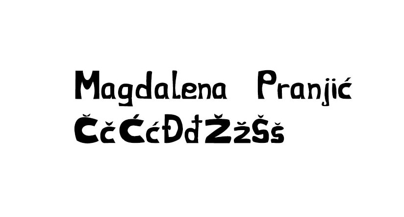
Vježba 2
U drugoj vježbi zadatak je bio u Ilustratoru. U ovoj vježbi naučila sam koristiti Bezierove krivulje.
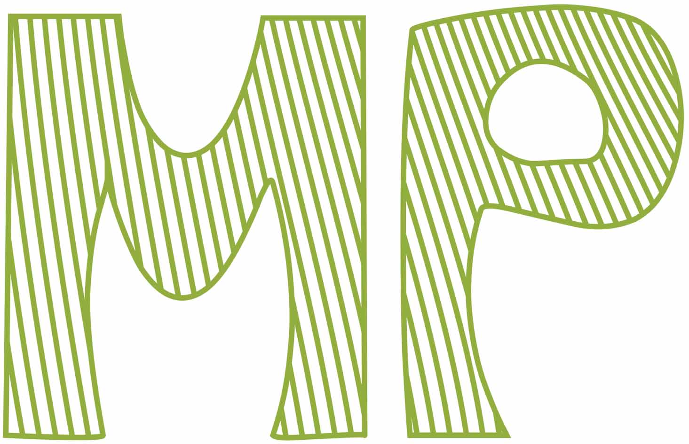
Vježba 3
U trećoj vježbi zadatak je bio nacrtati cvijet. Tu sam se koristila sustavom boja, transformacijom, multipliciranjem i grupiranjem.
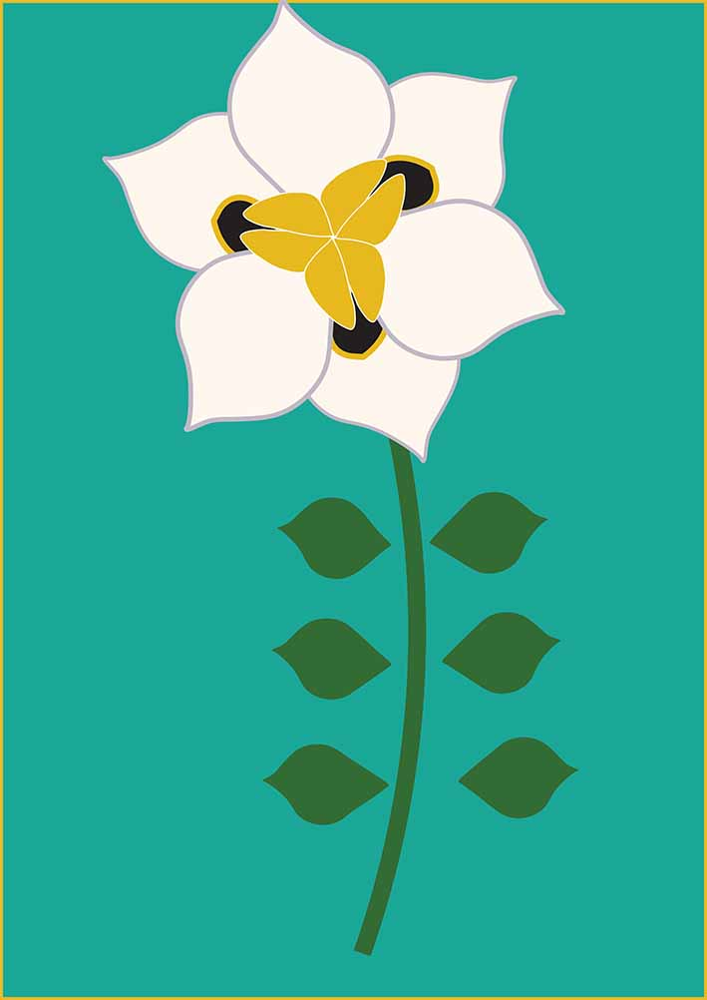
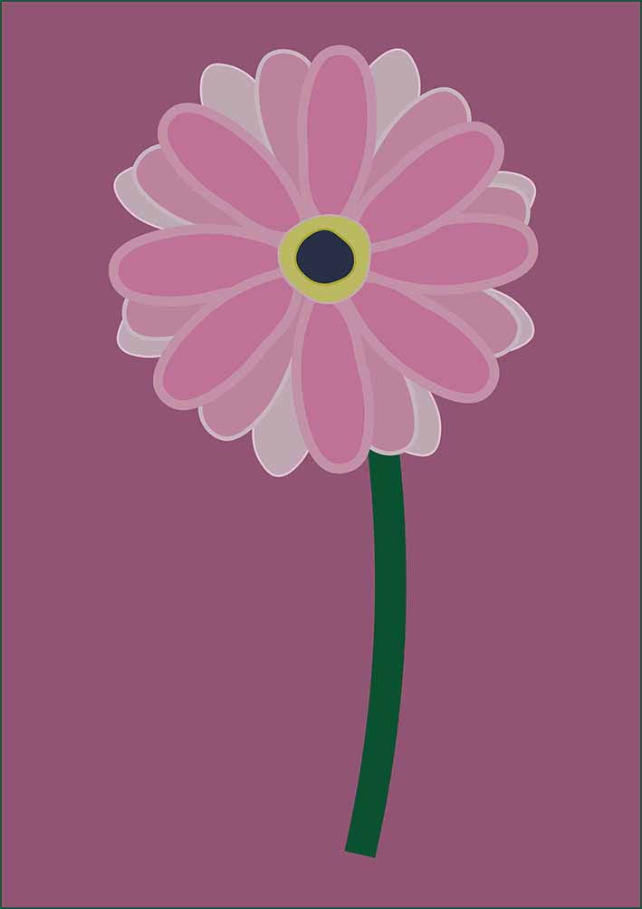
Vježba 4
U četvrtoj vježbi zadatak je bio također u Ilustratoru. Tu sam korisitila gradijente, transparenciju te različite metode spajanja.
 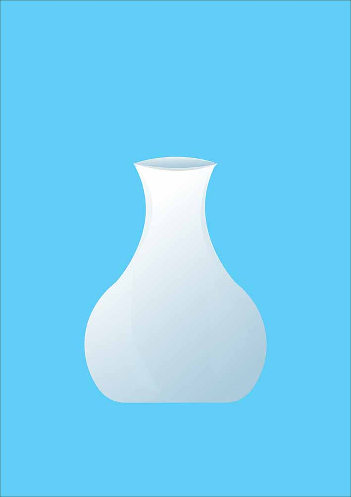
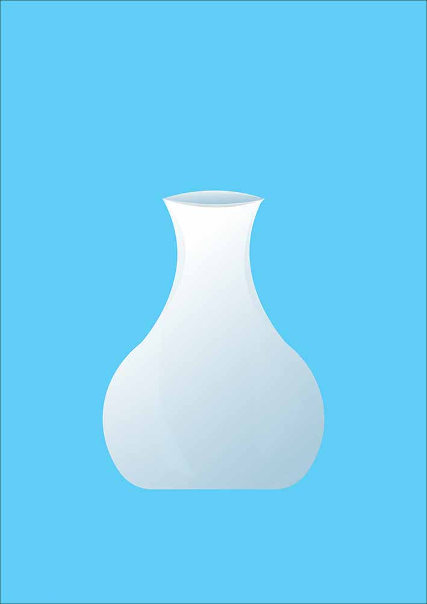
PROJEKTNI ZADATAK 1
Nakon četiri vježbe dobila sam Projektni zadatak. Gdje sam trebala napraviti ilustraciju na temu "Podmorje".
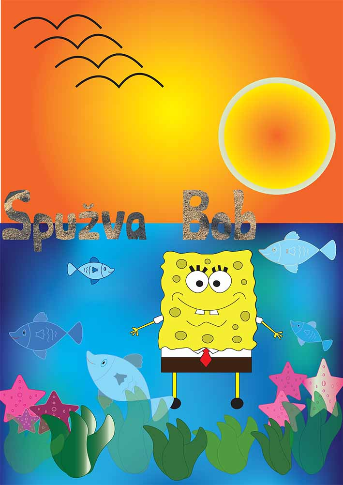
Vježba 5
U petoj vježbi zadatak je bio retuširati i korigirati nedostatke na dvije fotografije.
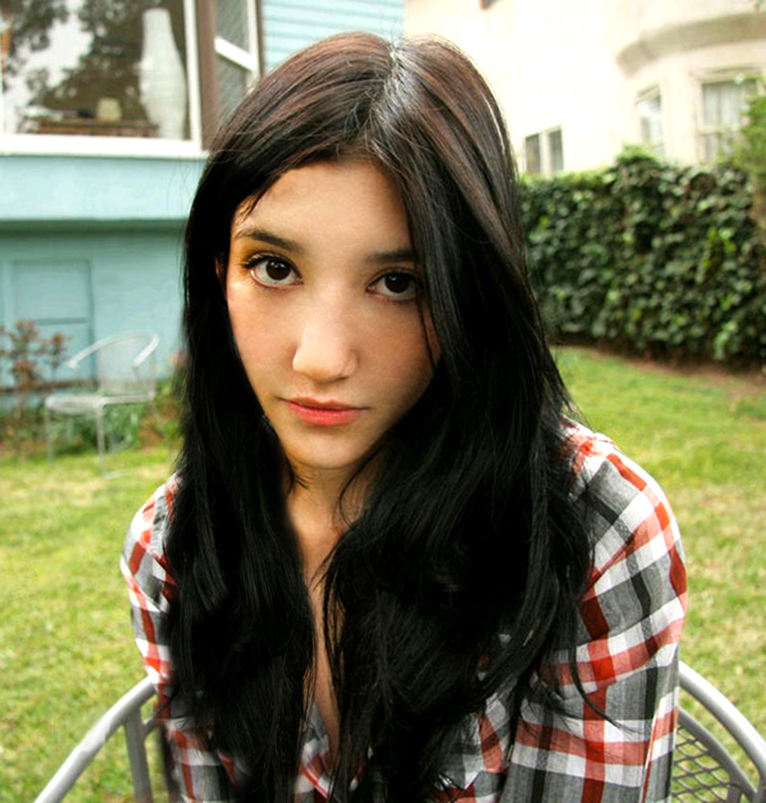

Vježba 6
U šestoj vježbi zadatak je bio u Photoshopu, gdje sam morala mijenjati boje na određenim dijelovima fotografije.
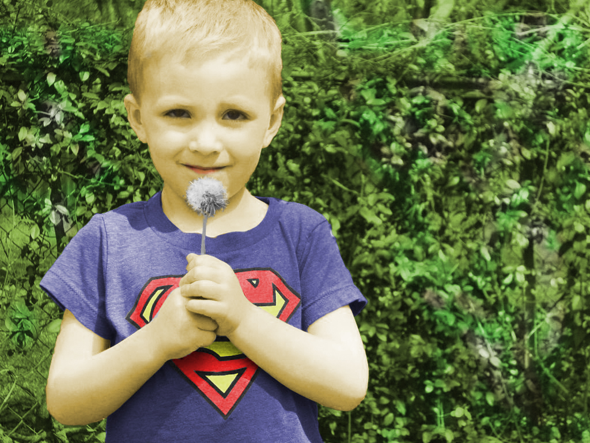
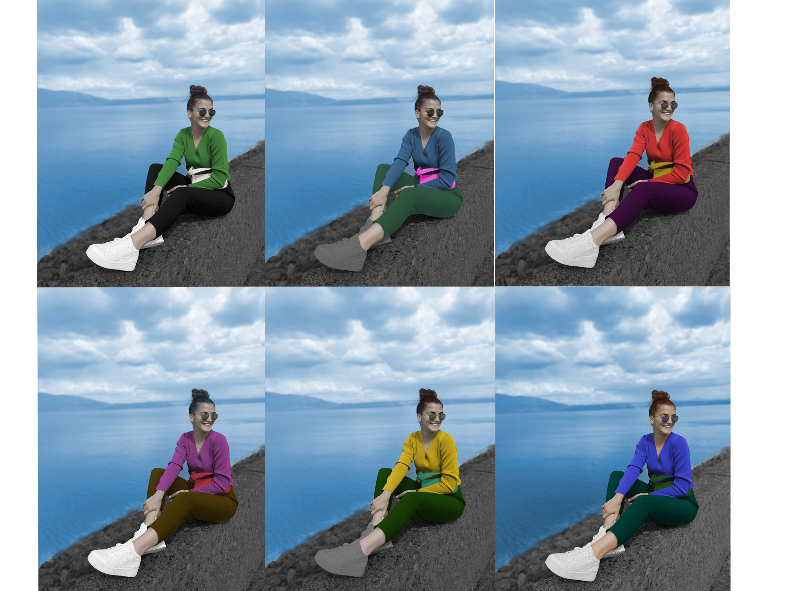
Vježba 7
U sedmoj vježbi zadatak je bio napraviti fotomontažu od zadanih i vlastitih fotografija da izgledaju što stvarnije.
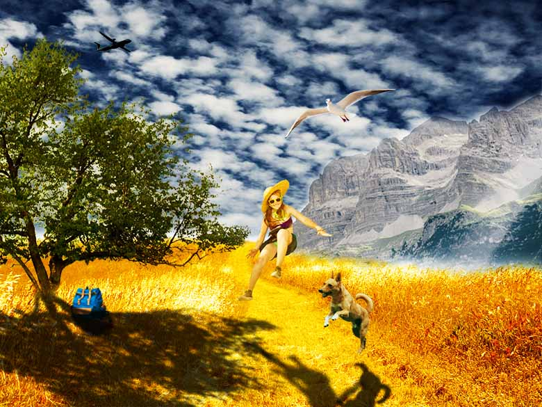
PROJEKTNI ZADATAK 2
Za drugi projektni zadatak morala sam retuširati pozadinu te napraviti fotomontažu sa zadanim elementima uz dodatak vlastitih fotografija.
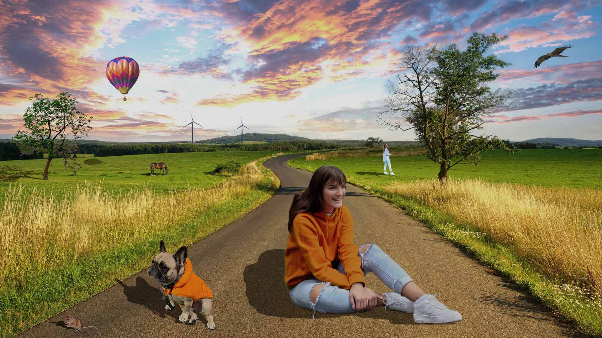
Vježba 8
U osmoj vježbi zadatak je bio napraviti kinemagraf po uputama s videa te vlastiti kinemagraf.

Vježba 9
U devetoj vježbi zadatak je bio napraviti video na kojem ćemo primijeniti različite efekte.
Vježbe 10. i 11.
U 10 i 11 vježbi zadatak je bio sličan ovom projektnom zadatku. Trebala sam napraviti html.
10. i 11. vježba